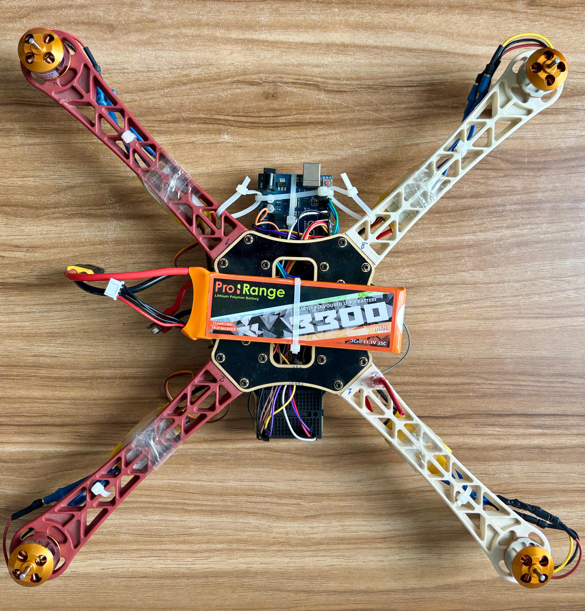
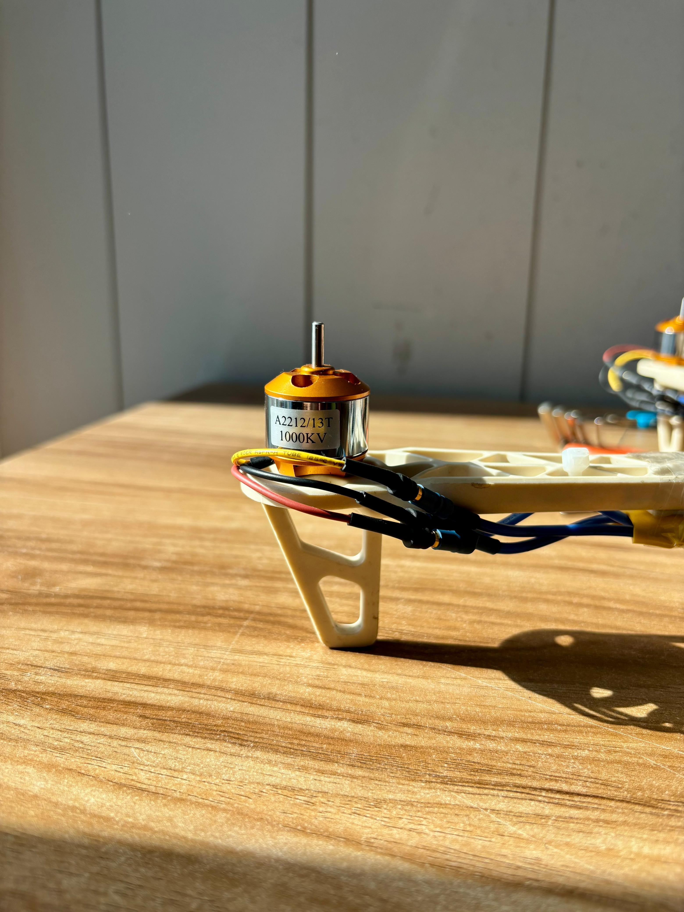
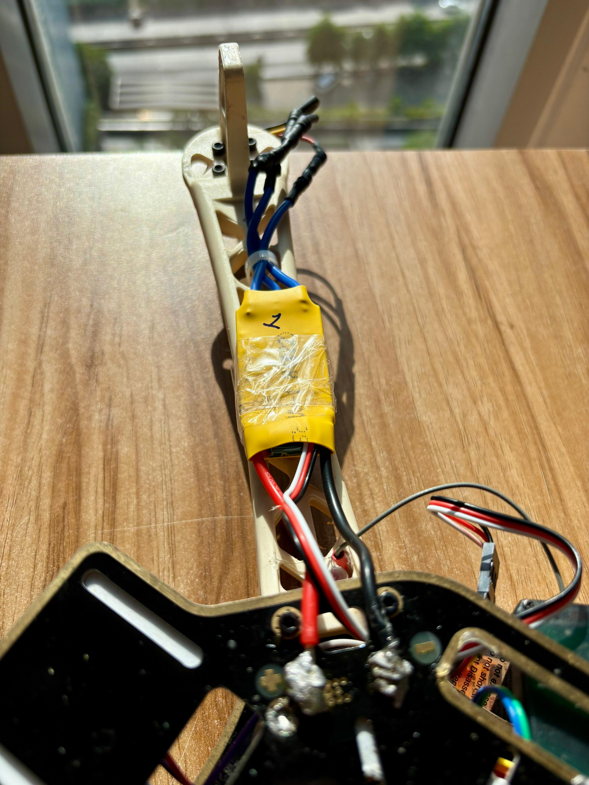
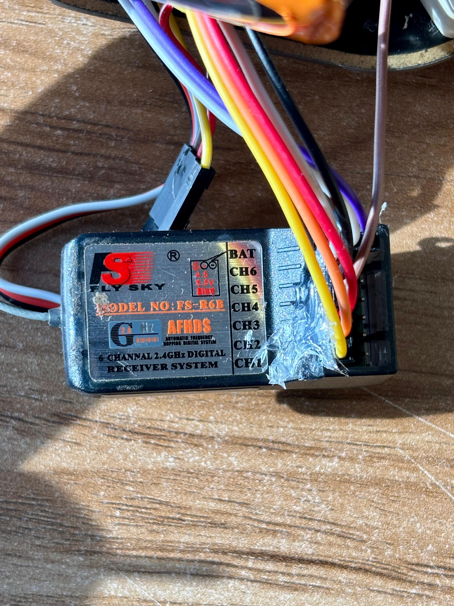
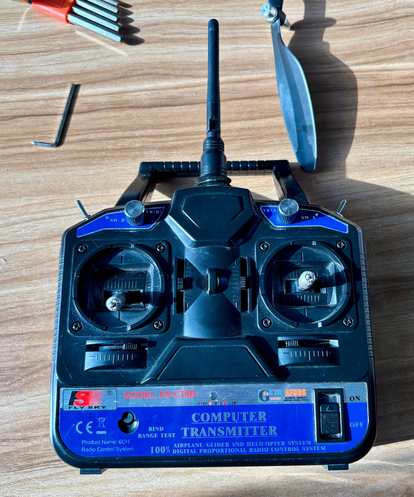
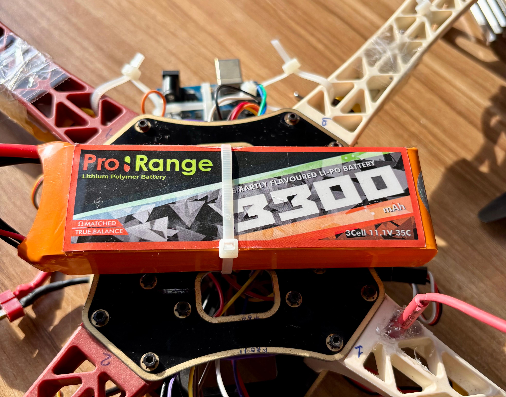
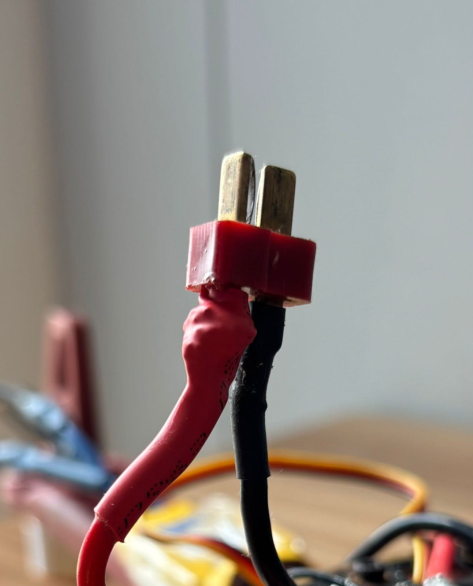
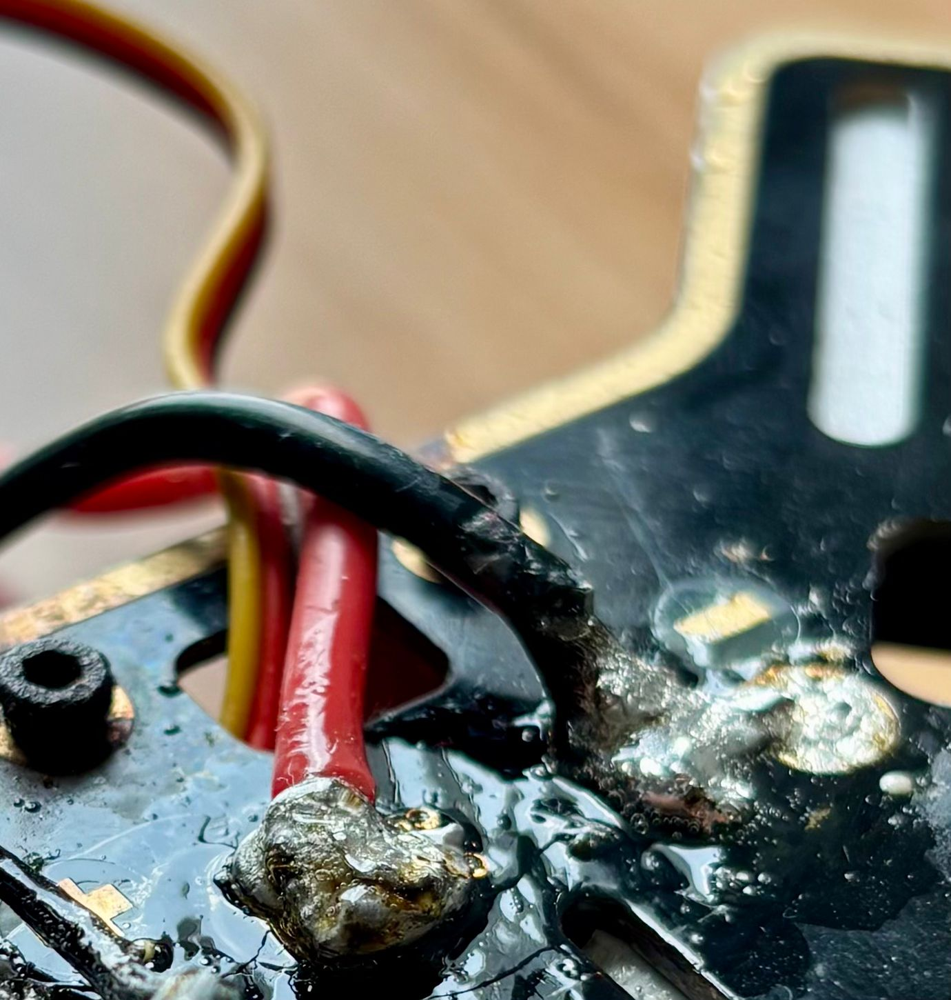

This is my build log for an Arduino-based quadcopter on an F450 X-frame.
I am wiring, soldering, coding, and testing the drone myself while I learn how each part actually works.
I picked this project because I wanted to build something real, not because it was assigned. Most of the work has been figuring out what to do when instructions online do not match my exact parts.
Debugging and iteration
The first version failed partly because I was moving too fast and trusting code I could not explain. The rebuild has been slower, but I understand much more of what I am changing.
Hardware/software integration
The drone forces the electronics and code to work together: receiver signals, ESC pulses, MPU6050 readings, PID corrections, and the power wiring all affect each other.
Safety awareness
I am treating safety as part of the build. That means common ground, careful LiPo handling, one BEC or regulator for 5V power, kill-switch logic, and props-off testing before anything spins up.
Documentation over time
This page shows the actual path: what failed, what I changed, how I documented the wiring, and what still has to happen before a real hover test.
Project Overview
THE BUILD
This is a quadcopter I am building around an Arduino Uno instead of using a ready-made flight controller. The point is to understand the control system, not just assemble a kit.
The drone uses an F450 X-frame, four 1000KV brushless motors, ESCs, a 3S 11.1V LiPo, and a power distribution board. I soldered the motor, ESC, signal, and power connections myself.
The Arduino reads a FlySky FS-R6B 6-channel receiver controlled by an FS-CT6B transmitter, gets motion data from an MPU6050 IMU, and sends direct pulse signals to the ESCs. Switch B acts as a throttle kill on CH3 / D10, with failsafe checks before the motors are allowed to run.
This page is where I am keeping the build notes, wiring decisions, code changes, and test results so someone can see both the technical work and the learning process.
I used this Fritzing diagram as a build reference while checking the Arduino pin mapping, FS-R6B receiver channels, ESC signal paths, MPU6050 I2C wiring, and shared logic power/ground connections.
Technical Breakdown
FULL SPECS
Power System
FrameF450 X-frame
Motors1000KV brushless
Battery3S 11.1V LiPo
DistributionPower Distribution Board
Arduino PowerUSB / Regulated Input
GroundingCommon ground
Sensing
IMUMPU6050 (I2C)
SDA / SCLA4 / A5
Gyro ScaleMPU6050 +/-500 deg/s
Loop Rate250 Hz
FS-R6B Receiver Input
CH1 / RollD8
CH2 / PitchD9
CH3 / ThrottleD10
CH4 / YawD11
CH5 / Pot AD12
CH6Optional / not used
Safety Logic
Kill SwitchSwitch B toward me
Throttle CutCH3 <= 1040us
Motors AllowedCH3 > 1040us after cut
RX FailsafeCH3 timeout: 1 second
ESC Idle1150us
ESC Cap1850us
PropsBeing checked for 1000KV setup
Build Evidence
BUILD PHOTOS

Full X-frame layout
Top view of the F450 X-frame with the Arduino, battery, motors, and wiring mounted together.

1000KV motor
One of the A2212/13T 1000KV motors mounted on the arm with the connector wiring heat-shrunk.

ESC wiring
ESC and motor wiring routed along the arm. This shows the power and signal wiring after assembly.
MPU6050 mount
The MPU6050 is mounted near the center of the frame so the Arduino can read pitch and roll motion.

FS-R6B receiver
The receiver wiring for the FlySky controller. CH3 carries throttle and the Switch B kill signal.

FS-CT6B transmitter
The controller used for receiver testing, throttle input, yaw, pitch, roll, and the Switch B kill behavior.

3S LiPo power
The 3S 11.1V LiPo mounted to the frame. I keep the battery secured before any powered testing.

T-plug heat shrink
Power connector work after learning how to use heat shrink for insulation and strain relief.

Hand soldering
Close-up of the soldered power wiring. I checked and reworked suspicious joints before testing again.
Dec 2024 - Present
JOURNAL
2024-12-01Hardware
PARTS ORDERED — FIRST ATTEMPT
Got the first set of parts together and started assembling the drone. I quickly realized I needed to slow down and understand the control system better.
Getting Started
Ordered the main components: Arduino Uno, 1000KV brushless motors, ESCs, MPU6050, FlySky FS-R6B receiver, FS-CT6B transmitter, 3S LiPo battery, and an F450 X-frame. At this point I mostly knew what each part was called, but not yet how the whole system should behave together.
First Assembly Attempt
Started piecing things together before I had a strong understanding of how the parts interacted. I wired the ESCs and motors, connected the MPU6050, and tried to make the Arduino handle too much at once.
The Control Problem
At first I moved too quickly through the control code and leaned too much on examples I could not fully explain. The code looked fine on the surface, but I did not understand receiver timing, ESC pulse output, or how to debug failures properly.
2025-02-01Testing
REALITY CHECK — HALF THE PARTS DON'T WORK
Several parts did not behave the way I expected, and the code was hard to debug because I had not understood enough of it.
What Went Wrong
After weeks of troubleshooting, it became clear that some parts were faulty or not working with the rest of the setup the way I expected. Motors that should have spun would not respond, and I could not always tell whether the problem was the ESC, wiring, code, or the part itself.
The Code Problem
The early code was also a dead end. I had generated or copied too much without understanding what the receiver readings, PID terms, or ESC outputs meant. When something broke, I could not reason through it.
Stepping Back
I decided to pause the project. Trying to build the hardware and flight-control software at the same time, without understanding either properly, was not going anywhere. I put it aside until after my 8th grade exams in June.
2025-06-15Research
STARTING OVER — UNDERSTANDING HOW DRONES WORK
After exams, took everything apart and went back to basics. Spent several weeks on fundamentals before touching any hardware.
Taking Everything Apart
After exams, I came back and took the build apart. Instead of trying to patch the old version, it made more sense to restart with a cleaner layout and a better understanding.
Learning the Fundamentals
I spent a few weeks learning the basics again: lift, thrust, torque, why opposite motor pairs spin in different directions, how an IMU measures motion, and what a PID controller is trying to correct. This time I wanted to understand the system before changing more code or soldering more wires.
Key Concepts Covered
I focused on how brushless motors and ESCs use pulse signals, how the MPU6050 sends accelerometer and gyro data over I2C, how a PID loop turns sensor error into a correction, and how motor mixing changes the four motor outputs for roll, pitch, and yaw.
2025-07-10Hardware
ASSEMBLY BEGINS — WIRING, SOLDERING, CAD
Started the second assembly attempt. I hand-soldered the wiring, checked diagrams carefully, and used CAD planning to think through the layout.
Soldering
I soldered the connections myself: motor wires to ESCs, ESC power to the distribution board, and signal wires back to the Arduino. This was the first time I had done this much soldering on a real project, so I took extra time on the smaller signal wires.
Wiring Confusion
A constant problem was that different projects online wired similar parts in different ways. I spent a lot of time comparing diagrams, forum posts, and comments to figure out what made sense for my own receiver, Arduino, ESCs, and MPU6050.
MPU6050 Orientation
I also had to pay attention to the MPU6050 orientation. If the sensor axes do not match the drone's axes, the PID controller can react in the wrong direction, which is the kind of mistake that becomes hard to diagnose later.
CAD Work
Alongside the physical build, I used CAD to think through parts of the F450 X-frame layout and mounts. It helped me see how components would fit before committing to the final placement.
Parts Issues
I also ran into parts problems. Some components did not behave consistently, and one battery issue caused voltage sag under load. Replacing and checking parts slowed the project down, but it also made the build safer.
2025-11-01Hardware
ASSEMBLY COMPLETE
After several months of work, the physical build is together. The frame is assembled, the wiring is soldered, and the electronics are mounted.
What's Built
The F450 X-frame is assembled with four 1000KV motors mounted and wired to their ESCs. The power distribution board connects to the 3S 11.1V LiPo. ESC signals go to D4, D5, D6, and D7. The FS-R6B receiver channels I use go to D8, D9, D10, D11, and D12. CH3 on D10 carries throttle and the Switch B kill signal. CH6 is not required for the current setup. The MPU6050 is connected over I2C, with SDA on A4 and SCL on A5. All ESC signal grounds, the receiver, Arduino, and MPU6050 share common ground.
Assembly Time
The assembly took longer than I expected because I kept checking the wiring before powering anything. That was worth it. A cold solder joint, reversed signal, or bad ground can waste hours, damage parts, or become unsafe when the LiPo is connected.
2025-12-05Software
WIRING DOCUMENTATION — FRITZING
Used Fritzing to create an accurate wiring diagram of the full build for future reference.
Why Fritzing
After the physical assembly, too much of the wiring was still in my head or in scattered notes. I used Fritzing to turn the Arduino, FS-R6B receiver, MPU6050, ESC, and power wiring into a diagram I could actually check later.
What Got Documented
The wiring diagram includes the four ESC signal pins (D4, D5, D6, D7), the active FS-R6B receiver channels (D8, D9, D10, D11, D12), the MPU6050 I2C lines (A4/A5), the shared ground path, and the 5V power rule: use only one ESC BEC or a separate regulator. CH6 is optional and not needed for the current control setup.
2026-01-10Testing
FLIGHT SIMULATOR PRACTICE — FS-CT6B CONTROLLER
Connected the FS-CT6B controller to a flight simulator to practice flying before the first real test. Also went deeper into how the drone's subsystems interact.
FS-CT6B + Simulator
I connected the FS-CT6B controller to my Mac and used a simulator to get more comfortable with the stick inputs before flying the real drone. It helped with basic orientation, but it still felt very different from testing an actual frame with real weight and vibration.
Going Back to Basics
I shifted back to understanding the system end to end: MPU6050 data into the PID loop, PID output into motor mixing, and Arduino pulses into ESC commands. If something goes wrong in a test, I need to know where in that chain to look.
Propeller Issue
Before the first real test, I realized I needed to be more careful about matching props, motors, and current draw. With the move to 1000KV motors, I am checking the prop choice again instead of rushing into a hover test.
2026-02-01Pause
ON HOLD — 9TH GRADE EXAMS
Paused the project from February through most of May 2026 for exam preparation, then came back to the build with a more careful repair checklist.
I paused the project from February through most of May 2026 for 9th grade exams. That break ended up being useful because it made me come back less rushed. The next step was not flying immediately; it was checking the physical build again, especially the solder joints, motor wiring, heat shrink, and connector work.
2026-05-23Hardware
REWORK DAY — HEAT SHRINK, SOLDERING, NEW MOTORS
Returned after exams, learned how to use heat shrink properly, resoldered suspicious connections, and prepared the new motors by soldering connectors to each one.
Back To The Physical Build
On May 23, 2026, I came back to the drone after exams and focused on the wiring instead of rushing toward a hover test. I checked the joints that looked questionable and resoldered the connections that did not look clean enough to trust under vibration.
Learning Heat Shrink
I also learned how to use heat shrink properly. Before this, I understood soldering as just making an electrical connection. This step made me think more about strain relief, exposed metal, and whether a connection would survive movement inside the frame.
New Motors
I got the new 1000KV motors and soldered connectors onto each motor lead. That gave me a cleaner motor-to-ESC setup and made it easier to inspect or replace parts later without cutting wires apart.
Reflection
WHAT I LEARNED
What failed
The first attempt failed because I tried to solve everything at once. I was assembling hardware, reading receiver signals, writing stabilization code, and trusting code I could not fully explain.
What changed
The second attempt started with basics. I took the build apart, studied how quadcopters balance thrust and torque, documented the wiring, and treated the drone as connected subsystems instead of separate parts.
What I understand now
I can now explain how MPU6050 data feeds a PID loop, how motor mixing changes each ESC signal, why common grounding matters, and why motor KV and propeller size affect current draw and safety.
Next milestone
After exams, the next step is checking the 1000KV motor setup, repeating pre-flight safety checks, testing motor response with props removed, and then attempting a controlled first hover.
Future updates
I will keep adding updates here as the build changes, especially wiring diagrams, CAD screenshots, test videos, and notes from the first hover attempts.